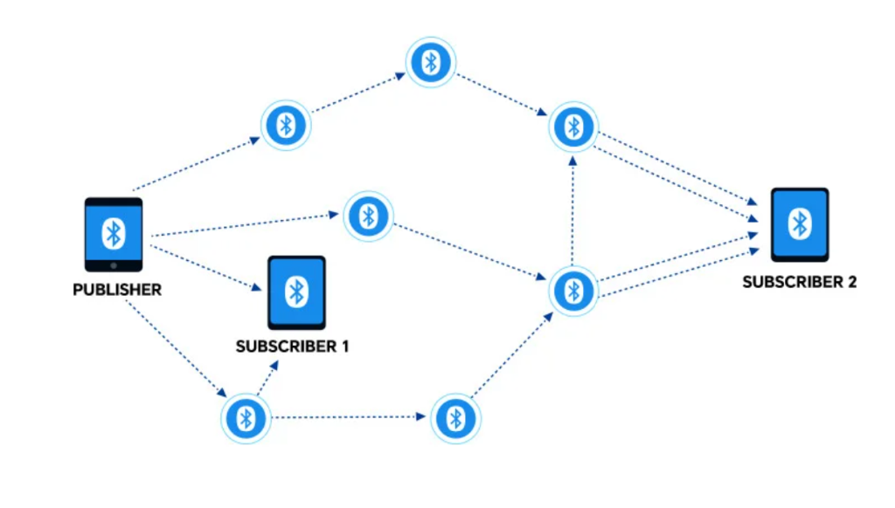

Dans un entrepôt logistique et de production automatisée, coexistent plusieurs besoins critiques en communication sans fil à courte et moyenne portée :
Votre équipe d'ingénierie BTS CIEL doit qualifier, prototyper et comparer expérimentalement les technologies Bluetooth Classic et Bluetooth Low Energy (BLE) à l'aide de microcontrôleurs ESP32, puis valider la mise en œuvre de trois topologies majeures : Piconet, Broadcast et Réseau Maillé (Mesh).
| Code | Compétence du Référentiel | Critères de Réussite & Tâches associées dans ce TP |
|---|---|---|
| C04 | Analyser une structure matérielle et logicielle |
• Différencier l'architecture en couches du Bluetooth Classic (RFCOMM/SPP) et du Bluetooth Low Energy (GAP/GATT). • Comparer les caractéristiques de couche physique : canaux radio (79 canaux de 1 MHz vs 40 canaux de 2 MHz), sauts de fréquence (FHSS) et canaux d'annonces (37, 38, 39). • Analyser sous Wireshark l'arrivée d'une trame BLE (PDU Header, Advertising Address AdvA, AD Data) et décoder les mécanismes d'identification de l'expéditeur (Public, Random Static, Resolvable Private Address avec clé IRK). • Identifier les avantages et contraintes des topologies Piconet, Broadcast (balises) et Maillée (modèle Publish/Subscribe & Managed Flooding). |
| C05 | Concevoir une structure matérielle et logicielle |
• Développer un maître de collecte Piconet en Bluetooth Classic SPP sur ESP32 (scrutation séquentielle de 3 esclaves Arduino Nano + HC-05 via la bibliothèque BluetoothSerial).• Concevoir un profil serveur GATT BLE avec Service propriétaire et Caractéristiques (UUID 128 bits, modes Read, Write, Notify). • Implémenter un émetteur BLE Broadcaster (iBeacon / Manufacturer Data) et un scanner récepteur (Observer). • Programmer un protocole de relais multi-sauts pour réseau maillé (Mesh flooding) avec décrémentation de TTL et table anti-boucle. |
| C06 | Valider une structure matérielle et logicielle |
• Analyser les trames publicitaires (Advertising Packets) et les services GATT à l'aide de nRF Connect for Mobile et du logiciel Wireshark (dissection PDU, filtres btle).• Mesurer le débit utile réel (kbit/s) et la latence moyenne en Classic SPP vs BLE GATT. • Valider la portée et la propagation d'une alerte à travers au moins un nœud relais dans le réseau maillé. |
| C07 | Réaliser des maquettes et prototypes | • Flasher et interconnecter la passerelle ESP32 et 3 cartes Arduino Nano (avec modules Grove Bluetooth v3.0 / HC-05) en respectant les rôles réseau (Maître/Esclaves Piconet, Serveur/Client, Nœuds Mesh). |
| C01 | Communiquer | • Rédiger une synthèse comparative argumentée préconisant la technologie sans fil adaptée pour chaque cahier des charges. |
| Paramètre | Bluetooth Classic (BR/EDR 2.1 / 3.0) | Bluetooth Low Energy (BLE 4.2 / 5.x) |
|---|---|---|
| Bande de fréquences ISM | 2,402 GHz à 2,480 GHz (79 canaux de 1 MHz) | 2,402 GHz à 2,480 GHz (40 canaux de 2 MHz) |
| Canaux spécifiques | Sauts pseudo-aléatoires sur l'ensemble des 79 canaux (FHSS, 1600 sauts/s) | 3 canaux de Broadcast/Advertising (37, 38, 39) et 37 canaux de données |
| Philosophie d'échange | Orienté connexion permanente continue (flux de streaming audio ou port série RS-232 émulé) | Orienté états éphémères (sommeil profond 99% du temps, réveils ultracourts < 5 ms pour quelques octets) |
| Couche d'abstraction haute | RFCOMM (émulation liaison série RS-232), L2CAP, profils SPP, A2DP, HID | GATT (Generic Attribute Profile) basé sur ATT (Attribute Protocol) et GAP |
| Consommation moyenne | Élevée : 25 mA à 45 mA en permanence (inadapté aux petites piles boutons) | Très faible : < 15 µA en veille, pics de 10 à 15 mA pendant quelques millisecondes |
| Débit utile mesuré | Élevé : 700 kbit/s à 2,1 Mbit/s (EDR) | Modéré : 100 kbit/s à 800 kbit/s (selon PHY 1M ou 2M) |
| Temps de connexion | Assez long : 1 à 3 secondes (négociation de lien, sauts de fréquence) | Quasi-instantané : quelques millisecondes (< 10 ms) |
En Bluetooth LE (Low Energy), l'absence d'appairage traditionnel dépend directement du mode de fonctionnement utilisé par l'appareil :
Contrairement aux réseaux Bluetooth traditionnels en étoile (Piconet) limités à un seul bond radio autour d'un équipement central, le Bluetooth Mesh s'appuie sur le paradigme Publish / Subscribe (Éditeur / Abonné) :

Dans un atelier industriel ou une centrale de supervision, une passerelle unique (ici une carte ESP32 configurée en Maître) doit collecter les relevés de trois pupitres/capteurs déportés autonomes (trois cartes Arduino Nano v3 + modules Grove Bluetooth v3.0 / HC-05, configurées en Esclaves nommés BT1, BT2 et BT3). Cette topologie en étoile avec un maître et plusieurs esclaves forme un Piconet.
Le profil Bluetooth Classic SPP (Serial Port Profile) reposant sur une émulation de liaison série point-à-point (canaux RFCOMM), le maître ESP32 doit scruter cycliquement l'environnement : il découvre les esclaves au scan, puis établit successivement une connexion avec chacun d'eux, acquiert leur message d'identification ("Bonjour [Nom]"), se déconnecte pour libérer le canal radio, et passe à l'esclave suivant.
Chaque binôme ou groupe d'étudiants prépare l'une des 3 cartes Arduino Nano (nommées BT1, BT2, ou BT3) selon le cahier des charges suivant :
SoftwareSerial BT_Serial(A1, A0); // RX sur A1, TX sur A0 afin de préserver l'UART matériel USB (D0/D1).BT1, BT2 ou BT3), le rôle Esclave (ROLE=0) et le code PIN commun 1234. L'adresse MAC Bluetooth (BD_ADDR de 6 octets) de chaque module doit être relevée et transmise à l'équipe gérant l'ESP32."Bonjour <Nom>\n" (par exemple "Bonjour BT1\n"). L'envoi doit être cadencé de manière non-bloquante (ex : toutes les 1000 ms avec millis()) ou asservi à la détection de connexion.Cahier des charges : Développer le microprogramme de l'Arduino Nano v3 pour qu'il diffuse son message de salutation sur le port série Bluetooth sans bloquer le microcontrôleur.
SoftwareSerial.h, millis() (scrutation temporelle sans delay()), terminateur \n, flush(), ATmega328P.\n indispensable pour la fonction de lecture readStringUntil('\n') de l'ESP32. Pourquoi l'utilisation de delay(1000) est-elle proscrite dans un équipement de mesure industriel communicant ?L'ESP32 utilise la bibliothèque standard BluetoothSerial en mode maître (SerialBT.begin("ESP32_Master", true)). Le programme est articulé autour de deux phases fondamentales inspirées du projet de référence codes arduino/esp32btclassic_scan_piconet.ino :
SerialBT.discover(10000)), l'ESP32 écoute les annonces Bluetooth Classic. Pour chaque équipement détecté, il compare son adresse MAC avec les 3 esclaves cibles (BT3, BT2, BT1), valide sa présence (flag trouveAuScan = true) et relève son niveau de puissance reçue RSSI en dBm.loop(), pour chaque module esclave détecté :
SerialBT.connect(cible.adresse).SerialBT.readStringUntil('\n').[BTx] : Bonjour BTx.SerialBT.disconnect() pour libérer le canal radio et passe à l'esclave suivant.BT3 → BT2 → BT1 → BT3.... Si un module est absent au scan, il est ignoré pour ne pas pénaliser la réactivité du bus.millis(), l'ESP32 doit mesurer la durée totale nécessaire pour effectuer un cycle complet de 3 relevés (de la tentative de connexion sur le 1er esclave jusqu'à la déconnexion réussie du 3e). Le temps mesuré et la moyenne par nœud doivent s'afficher en fin de chaque cycle.Cahier des charges : Adapter le code source de base codes arduino/esp32btclassic_scan_piconet.ino pour intégrer le calcul précis du temps de cycle pour 3 relevés et optimiser la réactivité en déconnectant dès la réception effective du message.
BluetoothSerial.h, SerialBT.discover(), BTScanResults, SerialBT.connect(adresse_mac), SerialBT.disconnect(), SerialBT.setPin("1234", 4), millis(), temps de cycle T_cycle.Tableau 1 : Recensement des esclaves et niveaux RF mesurés au scan initial :
| Module Esclave | Adresse MAC Bluetooth (BD_ADDR) | Détecté au Scan ? | Niveau RSSI mesuré (dBm) |
|---|---|---|---|
| BT1 | .... : .... : .... : .... : .... : .... |
[ ] OUI [ ] NON | ............... dBm |
| BT2 | .... : .... : .... : .... : .... : .... |
[ ] OUI [ ] NON | ............... dBm |
| BT3 | .... : .... : .... : .... : .... : .... |
[ ] OUI [ ] NON | ............... dBm |
Tableau 2 : Campagne de chronométrage du temps de cycle pour 3 relevés complets :
Laissez la boucle de scrutation s'exécuter et relevez sur le Moniteur Série de l'ESP32 la durée totale pour 3 relevés consécutifs sur 3 cycles successifs :
| Mesure de Cycle | Temps total pour 3 relevés (Δt en ms) | Temps moyen par esclave (Δt / 3 en ms) |
|---|---|---|
| Cycle N°1 | Tcycle 1 = ......................... ms | Tmoyen 1 = ......................... ms |
| Cycle N°2 | Tcycle 2 = ......................... ms | Tmoyen 2 = ......................... ms |
| Cycle N°3 | Tcycle 3 = ......................... ms | Tmoyen 3 = ......................... ms |
| Moyenne Globale | T̄cycle = ......................... ms | T̄noeud = ......................... ms |
"Bonjour BTx\n" ne prenant que quelques millisecondes à 9600 bauds, à quoi est imputable l'immense majorité de ce temps de cycle ? Détaillez les étapes protocolaires obligatoires en Bluetooth Classic (sauts de fréquences pseudo-aléatoires FHSS, synchronisation de l'horloge du canal, négociation des paquets de contrôle LMP et ouverture du canal logique RFCOMM).Le Bluetooth Low Energy (BLE) ne s'appuie plus sur une liaison série continue, mais sur une base de données d'attributs structurée : l'architecture GATT (Generic Attribute Profile). Les informations sont organisées selon la hiérarchie : Profil → Service → Caractéristique → Descripteur.
Chaque service et caractéristique est identifié par un UUID (Universally Unique Identifier). Pour des besoins industriels personnalisés, on génère des UUIDs sur 128 bits (16 octets).
/* =========================================================================
BTS CIEL - PARTIE 2 : Serveur GATT BLE sur ESP32
Service de télémétrie industrielle avec notification et commande
========================================================================= */
#include <BLEDevice.h>
#include <BLEServer.h>
#include <BLEUtils.h>
#include <BLE2902.h>
// UUIDs 128 bits générés pour notre pupitre industriel
#define SERVICE_UUID "4fafc201-1fb5-459e-8fcc-c5c9c331914b"
#define CHAR_TELEMETRY_UUID "beb5483e-36e1-4688-b7f5-ea07361b26a8" // NOTIFY + READ
#define CHAR_COMMAND_UUID "1c95d5e3-d8f7-413a-bf3d-7a2e5d7be87e" // WRITE
BLEServer* pServer = nullptr;
BLECharacteristic* pCharTelemetry = nullptr;
BLECharacteristic* pCharCommand = nullptr;
bool deviceConnected = false;
uint32_t valCapteur = 0;
// Gestionnaire d'événements de connexion
class MyServerCallbacks: public BLEServerCallbacks {
void onConnect(BLEServer* pServer) {
deviceConnected = true;
Serial.println(F("[BLE] Client connecté !"));
};
void onDisconnect(BLEServer* pServer) {
deviceConnected = false;
Serial.println(F("[BLE] Client déconnecté - Reprise des annonces..."));
// Relance automatique de la publicité après déconnexion
BLEDevice::startAdvertising();
}
};
// Gestionnaire d'écriture sur la caractéristique de commande
class CommandCallbacks: public BLECharacteristicCallbacks {
void onWrite(BLECharacteristic *pCharacteristic) {
String rxValue = pCharacteristic->getValue();
if (rxValue.length() > 0) {
Serial.print(F("[BLE REÇU] Commande reçue : "));
Serial.println(rxValue);
}
}
};
void setup() {
Serial.begin(115200);
Serial.println(F("Démarrage du Serveur BLE GATT ESP32..."));
// 1. Initialisation du périphérique BLE
BLEDevice::init("ESP32_BLE_GATT_B1");
// 2. Création du Serveur BLE
pServer = BLEDevice::createServer();
pServer->setCallbacks(new MyServerCallbacks());
// 3. Création du Service Primaire
BLEService *pService = pServer->createService(SERVICE_UUID);
// 4. Création de la Caractéristique de Télémétrie (Lecture + Notification)
pCharTelemetry = pService->createCharacteristic(
CHAR_TELEMETRY_UUID,
BLECharacteristic::PROPERTY_READ |
BLECharacteristic::PROPERTY_NOTIFY
);
// Ajout du descripteur standard 0x2902 indispensable pour autoriser les Notifications
pCharTelemetry->addDescriptor(new BLE2902());
// 5. Création de la Caractéristique de Commande (Écriture)
pCharCommand = pService->createCharacteristic(
CHAR_COMMAND_UUID,
BLECharacteristic::PROPERTY_WRITE
);
pCharCommand->setCallbacks(new CommandCallbacks());
// 6. Démarrage du service et des annonces (Advertising)
pService->start();
BLEAdvertising *pAdvertising = BLEDevice::getAdvertising();
pAdvertising->addServiceUUID(SERVICE_UUID);
pAdvertising->setScanResponse(true);
pAdvertising->setMinPreferred(0x06); // Optimisation pour connexion iOS
BLEDevice::startAdvertising();
Serial.println(F("Serveur BLE actif et en attente de connexions..."));
}
void loop() {
if (deviceConnected) {
valCapteur++;
char buffer[32];
snprintf(buffer, sizeof(buffer), "TEMP:%lu;ALARM=0", 20 + (valCapteur % 15));
// Mise à jour de la valeur et émission de la notification vers le client connecté
pCharTelemetry->setValue(buffer);
pCharTelemetry->notify();
Serial.printf("[NOTIFICATION ÉMISE] %s\n", buffer);
delay(1000); // Cadence de transmission
}
}4fafc201-....RESET en UTF-8 et validez. Vérifiez la réception sur la console série de l'ESP32.0x............0x............ (Expliquez le rôle de ce descripteur).
Certains cas d'usage industriels (géolocalisation d'outils, traçabilité de palettes, diffusion d'alertes générales) ne nécessitent aucune connexion préalable. Le mode Broadcast utilise uniquement les trois canaux d'annonces (canaux 37, 38 et 39) pour diffuser des données vers une infinité de récepteurs en écoute passive.
Une trame d'annonce standard transporte jusqu'à 31 octets découpés en blocs [Longueur | Type AD | Données]. Le champ 0xFF (Manufacturer Specific Data) permet d'injecter des données brutes propriétaires (ex : identifiant d'atelier, température, statut de machine).
/* =========================================================================
BTS CIEL - PARTIE 3 : Émetteur Balise BLE Broadcast (ESP32 N°1)
Diffusion de télémétrie sans aucune connexion
========================================================================= */
#include <BLEDevice.h>
#include <BLEUtils.h>
#include <BLEAdvertising.h>
BLEAdvertising *pAdvertising;
uint16_t sequenceNumber = 0;
void setup() {
Serial.begin(115200);
Serial.println(F("Démarrage du Beacon Broadcast BLE..."));
BLEDevice::init("BEACON_ATELIER_01");
pAdvertising = BLEDevice::getAdvertising();
}
void loop() {
sequenceNumber++;
int16_t temperature = 235; // 23.5 °C en dixièmes de degré
// Construction de la charge utile constructeur (Manufacturer Data - Type 0xFF)
// Format : [ID Entreprise (2 octets)] [ID Balise (1 octet)] [Température (2 octets)] [Compteur (2 octets)]
std::string mData = "";
mData += (char)0xFF; // Type AD: Manufacturer Data
mData += (char)0xFF; mData += (char)0x01; // ID Fabricant (ex: 0x01FF)
mData += (char)0x0A; // ID Balise #10
mData += (char)(temperature >> 8);
mData += (char)(temperature & 0xFF);
mData += (char)(sequenceNumber >> 8);
mData += (char)(sequenceNumber & 0xFF);
BLEAdvertisementData advData;
advData.setFlags(0x06); // Mode LE General Discoverable + BR/EDR Not Supported
advData.setName("BEACON_01");
advData.addData(mData);
pAdvertising->setAdvertisementData(advData);
pAdvertising->start();
Serial.printf("[BROADCAST ÉMIS] Séquence #%u | Temp = 23.5 C\n", sequenceNumber);
delay(1000); // Période d'annonce (Advertising Interval)
pAdvertising->stop();
delay(500); // Sommeil entre deux salves d'annonces
}/* =========================================================================
BTS CIEL - PARTIE 3 : Scanner / Observer BLE Broadcast (ESP32 N°2)
Écoute passive des annonces sur les canaux 37, 38 et 39
========================================================================= */
#include <BLEDevice.h>
#include <BLEUtils.h>
#include <BLEScan.h>
#include <BLEAdvertisedDevice.h>
int scanTime = 2; // Durée de scan en secondes
BLEScan* pBLEScan;
class MyAdvertisedDeviceCallbacks: public BLEAdvertisedDeviceCallbacks {
void onResult(BLEAdvertisedDevice advertisedDevice) {
if (advertisedDevice.haveName() && advertisedDevice.getName() == "BEACON_01") {
Serial.printf("\n[BEACON DÉTECTÉ] MAC : %s | RSSI : %d dBm\n",
advertisedDevice.getAddress().toString().c_str(),
advertisedDevice.getRSSI());
if (advertisedDevice.haveManufacturerData()) {
std::string strData = advertisedDevice.getManufacturerData();
Serial.printf(" Données brutes reçues (%d octets) : ", strData.length());
for (size_t i = 0; i < strData.length(); i++) {
Serial.printf("%02X ", (uint8_t)strData[i]);
}
Serial.println();
}
}
}
};
void setup() {
Serial.begin(115200);
Serial.println(F("Démarrage du Scanner BLE Observer..."));
BLEDevice::init("");
pBLEScan = BLEDevice::getScan();
pBLEScan->setAdvertisedDeviceCallbacks(new MyAdvertisedDeviceCallbacks());
pBLEScan->setActiveScan(true); // Active scan pour demander le Scan Response
pBLEScan->setInterval(100);
pBLEScan->setWindow(99); // Fenêtre de réception quasi-permanente
}
void loop() {
pBLEScan->start(scanTime, false);
pBLEScan->clearResults(); // Libération de la mémoire
delay(500);
}L'analyseur de protocoles Wireshark est l'outil de référence en BTS CIEL pour décortiquer les trames réseau. En Bluetooth LE, la capture peut être réalisée soit au moyen d'un dongle sniffer radio (ex : nRF Sniffer for Bluetooth LE sur les canaux 37, 38, 39), soit via le journal de surveillance Bluetooth HCI (btsnoop_hci.log) exportable depuis n'importe quel smartphone Android en mode développeur.
Voici l'arbre de dissection protocolaire réel d'une trame d'annonce (Advertising Packet) émise par notre balise ESP32 et capturée sous Wireshark :
Frame 142: 44 bytes on wire (352 bits), 44 bytes captured
Bluetooth Low Energy Link Layer
Access Address: 0x8e89bed6 <-- Adresse d'accès fixe des canaux d'annonce (37, 38, 39)
Packet Header: 0x2200 (PDU Type: ADV_NONCONN_IND, TxAdd: Random, Length: 28)
.... 0010 = PDU Type: ADV_NONCONN_IND (0x2) <-- Annonce non connectable et non orientée (Balise)
...0 .... = RFU: 0
..1. .... = ChSel: 1 (Channel Selection Algorithm #2)
.1.. .... = TxAdd: Random (1) <-- TYPE D'ADRESSE EXPÉDITEUR : 1 = Random / 0 = Public
0... .... = RxAdd: Public (0)
Length: 28 octets
Advertising Address: c6:54:12:34:56:78 (c6:54:12:34:56:78) <-- ADRESSE MAC DE L'EXPÉDITEUR (AdvA)
Advertising Data
Flags
Length: 2
Type: Flags (0x01)
0000 0110 = Flags: 0x06 (LE General Discoverable Mode, BR/EDR Not Supported)
Complete Local Name
Length: 10
Type: Complete Local Name (0x09)
Device Name: BEACON_01 <-- Nom textuel de l'équipement
Manufacturer Specific
Length: 8
Type: Manufacturer Specific (0xFF) <-- Données brutes de télémétrie injectées par l'ESP32
Company ID: 0x01FF (Propriétaire)
Data: 0a00eb0001 (ID Balise #10, Temp = 23.5 C, Séquence #1)
CRC: 0x5a31b2 <-- Contrôle d'intégrité radio (24 bits)Contrairement au Bluetooth classique où l'adresse MAC (BD_ADDR) est toujours publique et gravée en dur, le standard BLE définit deux types d'adresses d'émission dans le champ AdvA (48 bits), signalés par le bit TxAdd de l'en-tête de paquet :
11 (ex : C6:...). L'adresse reste constante pendant toute la session ou le cycle d'alimentation de l'objet.01 (ex : 4A:...). L'adresse change aléatoirement à intervalle régulier (typiquement toutes les 15 minutes sur smartphone). Seul un destinataire autorisé possédant la clé secrète partagée IRK (Identity Resolving Key) peut décrypter l'adresse via un algorithme cryptographique AES-128 pour retrouver la véritable identité du terminal !00. Adresse purement éphémère et anonyme.Filtre Wireshark : ....................................................................................................................................TxAdd : ............c6:54:12:34:56:78) est-elle une adresse Publique ou Aléatoire ? Justifiez.0xC6) en binaire : 0xC6 = %.........................La limite majeure du Bluetooth en atelier est sa portée (typiquement 10 à 20 mètres en intérieur). La topologie Mesh (Réseau Maillé) résout ce problème par la technique de l'inondation contrôlée (Managed Flooding) : chaque nœud agit comme un relais en retransmettant les messages qu'il entend pour étendre la couverture globale.
Pour qu'un message ne tourne pas indéfiniment en boucle entre les nœuds :
TTL == 0, le paquet est détruit.(Originator_ID, Sequence_Number). Si un nœud reçoit un message dont l'ID figure déjà dans son historique, il l'ignore immédiatement et ne le retransmet pas !Ce programme autonome s'installe sur tous les ESP32 du groupe (ou de binômes interconnectés). Chaque carte possède son propre ID (ex : 0x01, 0x02, 0x03) :
/* =========================================================================
BTS CIEL - PARTIE 4 : Nœud Relais Réseau Maillé BLE (ESP-Mesh Flooding)
Chaque ESP32 reçoit, vérifie le cache, décrémente le TTL et relaie l'alerte
========================================================================= */
#include <BLEDevice.h>
#include <BLEUtils.h>
#include <BLEScan.h>
#include <BLEAdvertising.h>
const uint8_t MY_NODE_ID = 0x02; // ATTENTION : Définir un ID unique par carte (0x01, 0x02, 0x03...)
const uint8_t MESH_COMPANY_ID = 0xAA; // Clé de reconnaissance du réseau BTS CIEL
// Structure du paquet Mesh encapsulé dans le Manufacturer Data
struct __attribute__((packed)) MeshPacket {
uint8_t companyId; // 0xAA
uint8_t sourceId; // Nœud d'origine de l'alerte
uint16_t msgId; // Numéro séquentiel unique
uint8_t ttl; // Nombre de sauts restants (Time-To-Live)
uint8_t payload; // Donnée (ex: 0xFF = ALERTE INCENDIE, 0x01 = NORMAL)
};
// Table d'historique pour éliminer les doublons (Anti-Bouclage)
#define CACHE_SIZE 10
uint16_t seenMessages[CACHE_SIZE] = {0};
uint8_t cacheIndex = 0;
BLEScan* pBLEScan;
BLEAdvertising* pAdvertising;
bool isRelaying = false;
MeshPacket packetToRelay;
bool hasSeenMessage(uint16_t id) {
for (int i = 0; i < CACHE_SIZE; i++) {
if (seenMessages[i] == id) return true;
}
return false;
}
void markMessageSeen(uint16_t id) {
seenMessages[cacheIndex] = id;
cacheIndex = (cacheIndex + 1) % CACHE_SIZE;
}
// Fonction de relais d'un paquet
void relayMessage(MeshPacket pkt) {
pkt.ttl--; // Décrémentation du compteur de sauts
std::string mData((char*)&pkt, sizeof(MeshPacket));
BLEAdvertisementData advData;
advData.setManufacturerData(mData);
pAdvertising->setAdvertisementData(advData);
pAdvertising->start();
Serial.printf(">> [RELAIS MESH] Message #%u relayé ! (Nouveau TTL = %d)\n", pkt.msgId, pkt.ttl);
delay(600); // Émission pendant 600 ms
pAdvertising->stop();
}
class MeshScanCallbacks: public BLEAdvertisedDeviceCallbacks {
void onResult(BLEAdvertisedDevice dev) {
if (dev.haveManufacturerData()) {
std::string data = dev.getManufacturerData();
if (data.length() == sizeof(MeshPacket)) {
MeshPacket* pkt = (MeshPacket*)data.data();
if (pkt->companyId == MESH_COMPANY_ID) {
// Vérification si ce message a déjà été traité
if (!hasSeenMessage(pkt->msgId)) {
markMessageSeen(pkt->msgId);
Serial.printf("\n[NOUVEAU MESSAGE MESH REÇU !]\n");
Serial.printf(" Origine : Nœud #%02X | Msg ID : #%u | TTL Reçu : %d | Alerte : 0x%02X\n",
pkt->sourceId, pkt->msgId, pkt->ttl, pkt->payload);
// Si le TTL est supérieur à 1, nous devons le relayer aux voisins !
if (pkt->ttl > 1) {
packetToRelay = *pkt;
isRelaying = true;
} else {
Serial.println(F(" [TTL ÉPUISÉ] Paquet non réémis (fin de vie du saut)."));
}
}
}
}
}
}
};
void setup() {
Serial.begin(115200);
Serial.printf("\n=======================================================\n");
Serial.printf(" Nœud Mesh BLE initialisé - ID Nœud : 0x%02X\n", MY_NODE_ID);
Serial.printf("=======================================================\n");
Serial.println(F("Tapez 'SEND' dans la console pour générer une alerte locale."));
BLEDevice::init("");
pAdvertising = BLEDevice::getAdvertising();
pBLEScan = BLEDevice::getScan();
pBLEScan->setAdvertisedDeviceCallbacks(new MeshScanCallbacks());
pBLEScan->setActiveScan(false);
pBLEScan->setInterval(80);
pBLEScan->setWindow(75);
}
void loop() {
// 1. Déclenchement manuel d'une alerte depuis la console série
if (Serial.available() > 0) {
String cmd = Serial.readStringUntil('\n');
cmd.trim();
if (cmd == "SEND") {
static uint16_t myMsgCounter = 100;
myMsgCounter++;
MeshPacket myAlert;
myAlert.companyId = MESH_COMPANY_ID;
myAlert.sourceId = MY_NODE_ID;
myAlert.msgId = (MY_NODE_ID << 8) | (myMsgCounter & 0xFF);
myAlert.ttl = 3; // Permet jusqu'à 3 sauts dans le réseau
myAlert.payload = 0xFF; // Code Alerte
markMessageSeen(myAlert.msgId);
Serial.printf("\n*** [ÉMISSION INITIALE ALERTE] ID Msg #%u (TTL initial = %d) ***\n",
myAlert.msgId, myAlert.ttl);
relayMessage(myAlert);
}
}
// 2. Traitement d'un relais en attente
if (isRelaying) {
isRelaying = false;
relayMessage(packetToRelay);
}
// 3. Écoute continue du canal radio Mesh
pBLEScan->start(1, false);
pBLEScan->clearResults();
}Placez 3 cartes ESP32 réparties dans la salle de TP selon la topologie en ligne :
MY_NODE_ID = 0x01), Nœud 2 (MY_NODE_ID = 0x02), Nœud 3 (MY_NODE_ID = 0x03).SEND. Observez la réception sur le Nœud 2, sa réémission immédiate avec décrémentation du TTL, et la réception finale sur le Nœud 3 !0x............#............TTL = ............Complétez le tableau récapitulatif ci-dessous à partir de l'ensemble de vos observations en TP :
| Technologie / Topologie | Débit Utile Constaté | Nombre max d'équipements | Consommation Énergétique Relative | Cas d'application industriel privilégié |
|---|---|---|---|---|
| Bluetooth Classic (SPP) | ..................... kbit/s | ..................... | Élevée (Tx/Rx continu) | .................................................................................... |
| BLE GATT (Connecté) | ..................... kbit/s | Multiples (selon Central) | Faible (Mode Notify périodique) | .................................................................................... |
| BLE Broadcast (Beacon) | Très faible (31 octets/salve) | Illimité | Ultra-faible (Sommeil entre annonces) | .................................................................................... |
| BLE Mesh (Maillé) | Faible (< 20 kbit/s) | Centaines à milliers | Modérée à faible selon le rôle | .................................................................................... |
| Compétence | Indicateurs d'Évaluation | Barème | Note |
|---|---|---|---|
| C07 - Réalisation | Téléversement correct des différents firmwares sur les ESP32, paramétrage soigné des identifiants (noms, rôles, IDs de nœuds). | /3 pts | |
| C04 - Analyse | Maîtrise des concepts protocolaires (RFCOMM vs GATT, canaux 37-39 d'annonces, principes anti-bouclage et TTL du Mesh). | /4 pts | |
| C05 - Conception | Configuration opérationnelle des services GATT (UUIDs, CCCD, notifications) et du protocole de relayage maillé (Mesh flooding). | /6 pts | |
| C06 - Validation | Exploitation rigoureuse des outils d'analyse (nRF Connect, Serial Terminal), justesse des mesures de débit, de RSSI et de relais multi-sauts. | /5 pts | |
| C01 - Communication | Qualité rédactionnelle, complétion méthodique des tableaux de synthèse et pertinence des réponses aux questions d'ingénierie. | /2 pts |